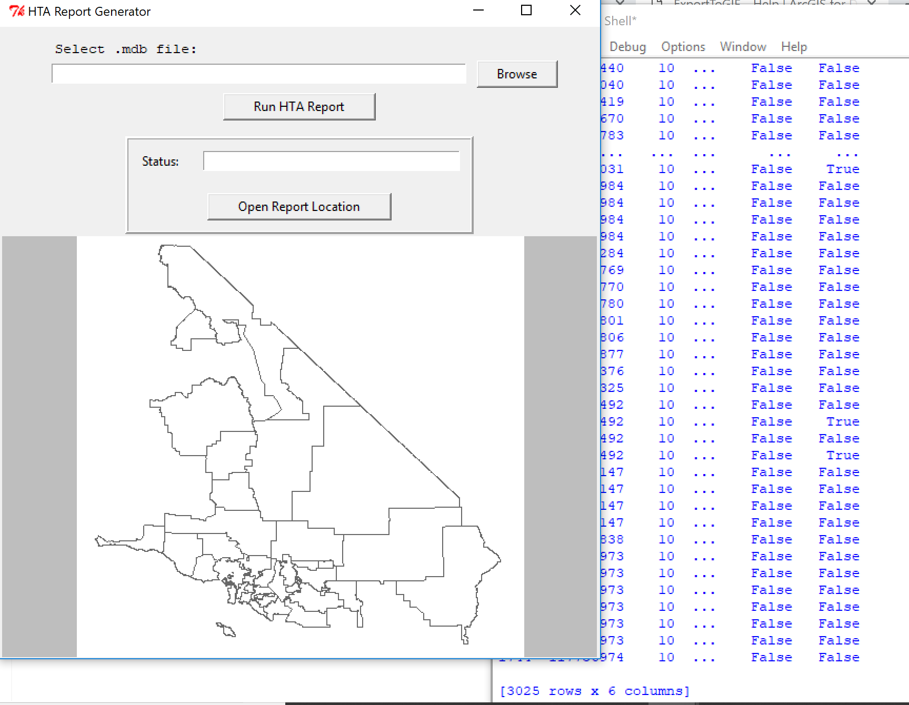

Title: Python Report Tool
Programs used: Python, Tkinter, Pyodbc, Pandas, Access, ArcPy, ArcMap
Description: This project was created for Grography 578: Practicum in GIS Development. This reporting tool was created to analyze data to print out a report of utility data for my employer.
